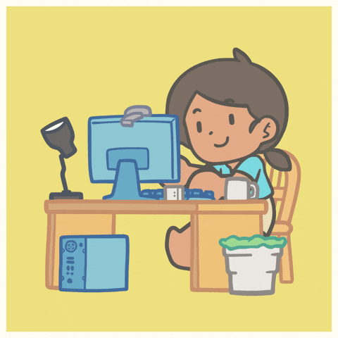
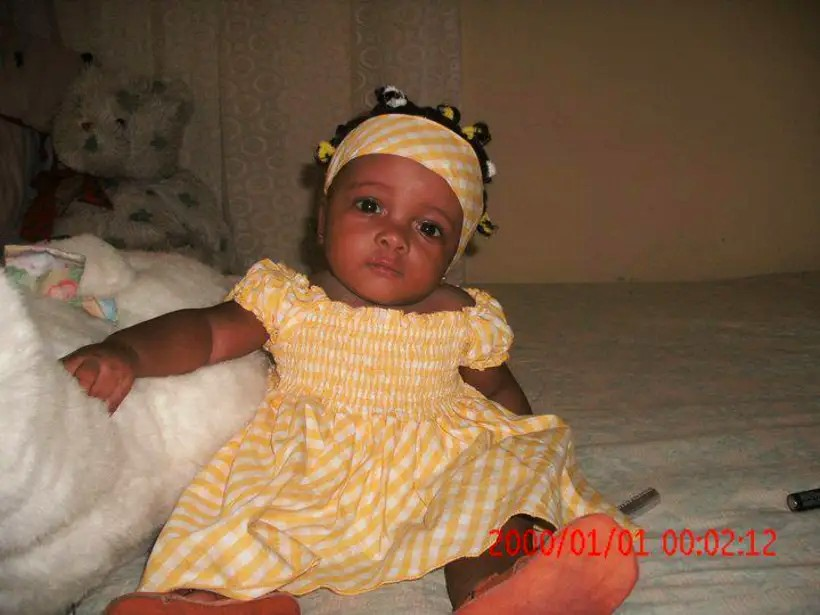
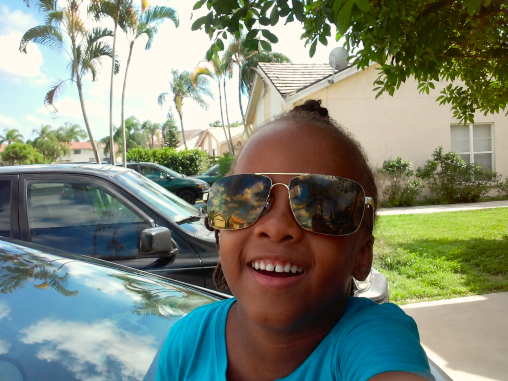
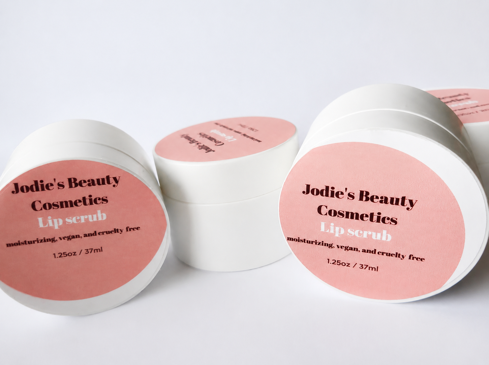
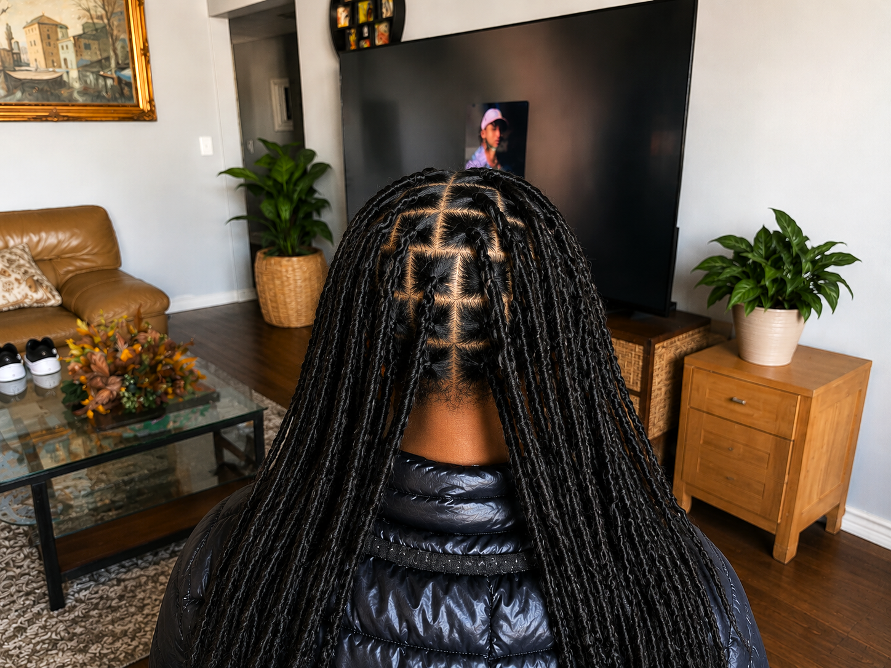
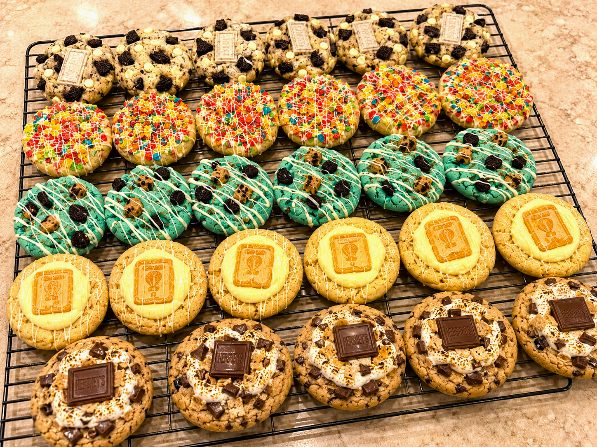
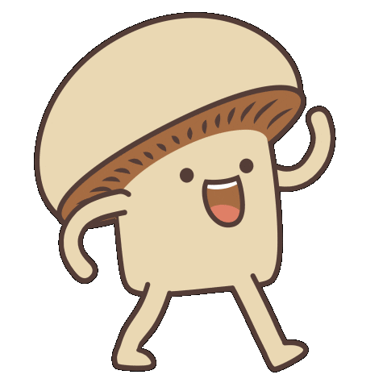
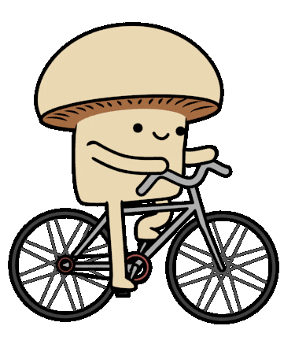

Jodie Chacreton
My Short Memory Journal
Can Gen Z...?
Welcome to my whimsical scrapbook-style About Me page!
Let unpack all the special memories that make me who I am today.

My Process
I am a driven and creative student with a passion for both innovation and service. As a young entrepreneur, I have built and managed my own small business, developing skills in leadership, marketing, customer service, and problem-solving. Alongside my entrepreneurial pursuits, I am committed to pursuing a career in cybersecurity, where I hope to combine analytical thinking with technology to make a meaningful impact. I enjoy taking on new challenges, whether through academics, business ventures, or creative projects, and I strive to approach every opportunity with determination, adaptability, and a willingness to learn. Through my experiences, I have developed strong communication skills, resilience, and a growth mindset that continue to shape both my personal and professional goals.

The Journey There
Memory one

Léogâne Commune in Haiti
This is me during my early childhood in Léogâne Commune, Haiti, where my life began and many of my earliest memories were made.
Memory two

West Palm Beach City in Florida
This picture captures a happy moment during my time in West Palm Beach, where I experienced new opportunities and created lasting memories.
Memory three

Jodie's Beauty Cosmetics
This image represents the beginning of my entrepreneurial journey through Jodie's Beauty Cosmetics, my first business, where I learned the value of creativity, branding, and serving customers.
Memory four

A moment for the hair
This photo showcases my hairstyling work through my second business, where I developed my skills, creativity, and attention to detail while helping clients look and feel their best.
Memory five

Jodie's Cookies
Jodie's Cookies is my baking business, where I first sold cookies door-to-door and now continue growing by selling them at school while expanding my customer base.
Memory six
Can Gen-Z Cook?
Can Gen-Z Cook? is my YouTube channel, where I share cooking content, creative ideas, and my passion for making food fun and engaging for others.
Hobbies: [Walking] [Dancing] [Biking]


Here's the Part I Want You to Remember
Looking back, I realized I was really documenting my life. Every photo, every business, every success, every mistake, and every new experience became part of the person I'm still becoming.
Living is part of the process.
- Trying something new is part of the process.
- Making mistakes is part of the process.
- Failing is part of the process.
- Changing directions is part of the process.
Can Gen Z...?
Can Gen Z become entrepreneurs?
Can Gen Z develop leadership, communication, customer service, and marketing skills?
Can Gen Z build businesses while balancing school and life?
Can Gen Z create, fail, learn, and keep going?
I believe the answer is yes.
This portfolio isn't meant to show that I have everything figured out. It's proof that I'm willing to keep learning, keep building, and keep growing. Every experience here represents another step in my journey, and I'm excited to see where the next one leads.
Sometimes, becoming who you're meant to be starts with simply living.